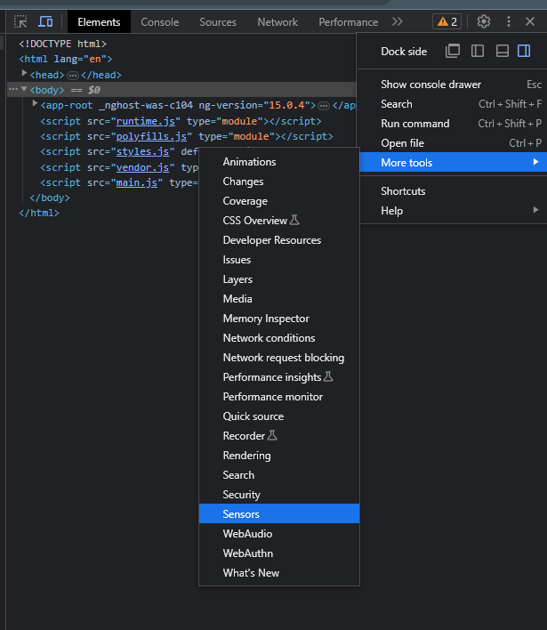

Let’s inject the LocationService into the app component.
Use effects with the location service current property and write a console.log message when the location has been obtained.
If you select the Sensor tab in developer tools in Chrome, you should be able to emulate geolocation coordinates. Try to do that, and notice how the effect logs out new messages.
